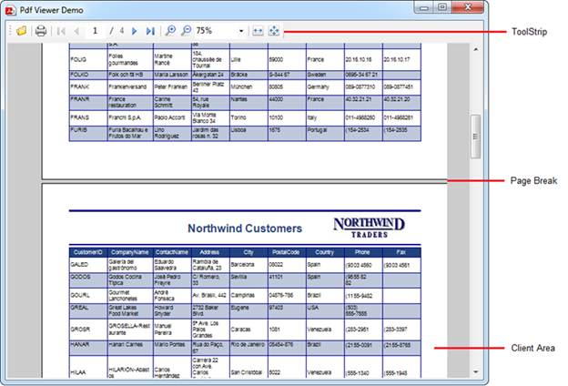
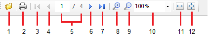

The following screenshot is a pictorial representation of PDF Viewer.

Figure 6: Structure of PDF Viewer
ToolStrip

Figure 7: Structure of ToolStrip
1. File Open Dialog
2. Show Print Dialog
3. Goto first page
4. Goto previous page
5. Page Indicator
6. Goto next page
7. Goto last page
8. Increase magnification
9. Decrease magnification
10. Preset magnification
11. Fill window
12. Fit page to window